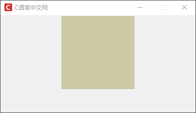
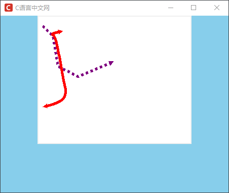
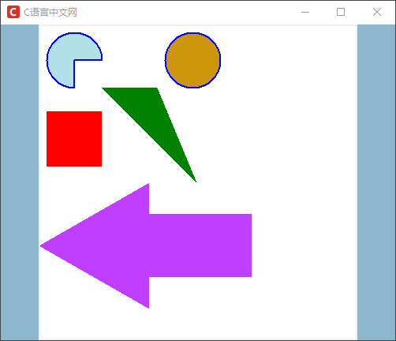
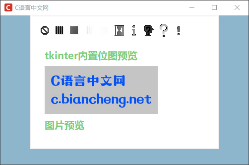
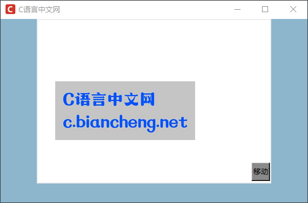

Tkinter Canvas画布控件详解
Canvas 控件具有两个功能，首先它可以用来绘制各种图形，比如弧形、线条、椭圆形、多边形和矩形等，其次 Canvas 控件还可以用来展示图片（包括位图），我们将这些绘制在画布控件上的图形，称之为“画布对象”。
上述属性是用来设置 Canvas 控件的，下面示例定义了出一张画布（Canvas），如下所示：
注意：上述方法都会返回一个画布对象的唯一 ID。关于 options 参数，下面会通过一个示例对经常使用的参数做相关介绍。（但由于可选参数较多，并且每个方法中的参数作用大同小异，因此对它们不再逐一列举）
从上述表格不难看出，Canvas 控件采用了坐标系的方式来确定画布中的每一点。一般情况下，默认主窗口的左上角为坐标原点，这种坐标系被称作为“窗口坐标系”，但也会存在另外一种情况，即画布的大小可能大于主窗口，当发生这种情况的时，可以采用带滚动条的 Canvas 控件，此时会以画布的左上角为坐标原点，我们将这种坐标系称为“画布坐标系”。
上述示例中涉及了一部分参数，比如 fill、dash、arrow 等，下表对 create_line() 函数的相关参数做了简单介绍：
对于扇形、矩形、三角形、圆形等，这些封闭式图形，它们由轮廓线和填充颜色两部分组成。在绘制这些图形时相关函数的可选参数与上述表格也存在略微差异，下面以绘制扇形的 create_arc() 函数为例做简单的介绍：
在实际的使用的过程中经常用到的参数有 dash、fill、outline、extend 和 start，但是这么多的参数我们也不可能都记住，这时查手册是一种很好的方法，官网文档地址：点击前往。
下面让我们来一组绘制几何图形的简单示例：
注意，添加到 Canvas 上的对象会一直保留直着。如果你希望修改它们，您可以使用 coords() 和 move() 方法来移动画布上的对象，当然您可以使用 delete() 来删除它们，示例如下：
每一个画布对象都有一个“唯一身份ID”，这是 Tkinter 自动为其创建的，从而方便控制和操作这些画布对象。
通过 Canvas 控件创建一个简单的图形编辑器，让用户可以达到自定义图形的目的，就像使用画笔在画布上绘画一样，可以绘制各式各样的形状，从而有更好的人机交互体验。Canvas控件基本属性
下面对 Canvas 控件的常用属性做简单的介绍，如下表所示：| 属性 | 方法 |
|---|---|
| background(bg) | 指定 Canvas 控件的背景颜色 |
| borderwidth(bd) | 指定 Canvas 控件的边框宽度 |
| closeenough |
1. 指定一个距离，当鼠标与画布对象的距离小于该值时，认为鼠标位于画布对象上 2. 该选项是一个浮点类型的值 |
| confine | 1. 指定 Canvas 控件是否允许滚动超出 scrollregion 选项设置的滚动范围，默认值为 True |
| selectbackground | 指定当画布对象（即在 Canvas 画布上绘制的图形）被选中时的背景色， |
| selectborderwidth | 指定当画布对象被选中时的边框宽度（选中边框） |
| selectforeground | 指定当画布对象被选中时的前景色 |
| state | 设置 Canvas 的状态："normal" 或 "disabled"，默认值是 "normal"，注意，该值不会影响画布对象的状态 |
| takefocus | 指定使用 Tab 键可以将焦点移动到输入框中，默认为开启，将该选项设置为 False 避免焦点在此输入框中 |
| width | 指定 Canvas 的宽度，单位为像素 |
| xscrollcommand | 与 scrollbar（滚动条）控件相关联（沿着 x 轴水平方向） |
| xscrollincrement |
1. 该选项指定 Canvas 水平滚动的“步长” 2. 例如 '3c' 表示 3 厘米，还可以选择的单位有 'i'（英寸），'m'（毫米）和 'p'（DPI，大约是 '1i' 等于 '72p'） 3. 默认为 0，表示可以水平滚动到任意位置 |
| yscrollcommand | 与 scrollbar 控件（滚动条）相关联（沿着 y 轴垂直方向） |
| yscrollincrement |
1. 该选项指定 Canvas 垂直滚动的“步长” 2. 例如 '3c' 表示 3 厘米，还可以选择的单位有 'i'（英寸），'m'（毫米）和 'p'（DPI，大约是 '1i' 等于 '72p'） 3. 默认值是 0，表示可以垂直方向滚动到任意位置 |
上述属性是用来设置 Canvas 控件的，下面示例定义了出一张画布（Canvas），如下所示：
import tkinter as tk
window = tk.Tk()
window.title("C语言中文网")
window.geometry('400x200')
# 创库不允许改变
window.resizable(0,0)
window.iconbitmap('C:/Users/Administrator/Desktop/C语言中文网logo.ico')
# 创建画布
canvas = tk.Canvas(window,
bg='#CDC9A5',
height=200,
width=300)
canvas.pack()
window.mainloop()
程序运行结果如下：

图1：tkinter Canvas控件
Canvas控件绘图常用方法
Cansvas 控件提供了一系列绘制几何图形的常用方法，下面对这些方法做简单介绍:
| 方法 | 说明 |
|---|---|
| create_line(x0, y0, x1, y1, ... , xn, yn, options) |
1. 根据给定的坐标创建一条或者多条线段； 2. 参数 x0,y0,x1,y1,...,xn,yn 定义线条的坐标； 3. 参数 options 表示其他可选参数 |
| create_oval(x0, y0, x1, y1, options) |
1. 绘制一个圆形或椭圆形； 2. 参数 x0 与 y0 定义绘图区域的左上角坐标；参数 x1 与 y1 定义绘图区域的右下角坐标； 3. 参数 options 表示其他可选参数 |
| create_polygon(x0, y0, x1, y1, ... , xn, yn, options) |
1. 绘制一个至少三个点的多边形； 2. 参数 x0、y0、x1、y1、...、xn、yn 定义多边形的坐标； 3. 参数 options 表示其他可选参数 |
| create_rectangle(x0, y0, x1, y1, options) |
1. 绘制一个矩形； 2. 参数 x0 与 y0 定义矩形的左上角坐标；参数 x 与 y1 定义矩形的右下角坐标； 3. 参数 options 表示其他可选参数 |
| create_text(x0, y0, text, options) |
1. 绘制一个文字字符串。其中 2. 参数 x0 与 y0 定义文字字符串的左上角坐标，参数 text 定义文字字符串的文字； 3. 参数 options 表示其他可选参数 |
| create_image(x, y, image) |
1. 创建一个图片; 2. 参数 x 与 y 定义图片的左上角坐标； 3. 参数 image 定义图片的来源，必须是 tkinter 模块的 BitmapImage 类或 PhotoImage 类的实例变量。 |
| create_bitmap(x, y, bitmap) |
1. 创建一个位图； 2. 参数 x 与 y 定义位图的左上角坐标； 3. 参数 bitmap 定义位图的来源，参数值可以是 gray12、gray25、gray50、gray75、hourglass、error、questhead、info、warning 或 question，或者也可以直接使用 XBM（X Bitmap）类型的文件，此时需要在 XBM 文件名称前添加一个 @ 符号，例如 bitmap=@hello.xbm |
| create_arc(coord, start, extent, fill) |
1. 绘制一个弧形； 2. 参数 coord 定义画弧形区块的左上角与右下角坐标； 3. 参数 start 定义画弧形区块的起始角度（逆时针方向）； 4. 参数 extent 定义画弧形区块的结束角度（逆时针方向）； 5. 参数 fill 定义填充弧形区块的颜色。 |
注意：上述方法都会返回一个画布对象的唯一 ID。关于 options 参数，下面会通过一个示例对经常使用的参数做相关介绍。（但由于可选参数较多，并且每个方法中的参数作用大同小异，因此对它们不再逐一列举）
从上述表格不难看出，Canvas 控件采用了坐标系的方式来确定画布中的每一点。一般情况下，默认主窗口的左上角为坐标原点，这种坐标系被称作为“窗口坐标系”，但也会存在另外一种情况，即画布的大小可能大于主窗口，当发生这种情况的时，可以采用带滚动条的 Canvas 控件，此时会以画布的左上角为坐标原点，我们将这种坐标系称为“画布坐标系”。
1) 绘制直线
下面示例展示了如何在画布（Canvas控件）上绘制一条虚线和实线，代码如下：
from tkinter import *
root = Tk()
# 设置窗口的背景颜色以区别画布
root.config(bg='#87CEEB')
root.title("C语言中文网")
root.geometry('450x350')
root.iconbitmap('C:/Users/Administrator/Desktop/C语言中文网logo.ico')
# 设置画布的背景颜色为白色
cv=Canvas(root,bg="white",width =300, height = 250)
# 将控件放置在主窗口中
cv.pack()
# 设置坐标点,此处可以元组的形式来设置坐标点
point=[(10,20),(20,30),(30,40),(40,100),(80,120),(150,90)]
# 创建画布，添加线条
# fill 参数指定填充的颜色，如果为空字符串，则表示透明
# dash 参数表示用来绘制虚线轮廓，元组参数，分别代表虚线中线段的长度和线段之间的间隔
# arrow 设线段的箭头样式，默认不带箭头，参数值 first 表示添加箭头带线段开始位置，last表示到末尾占位置，both表示两端均添加
# smooth 布尔值参数，表示是否以曲线的样式划线，默认为 False
# width 控制线宽
line1=cv.create_line(point,fill="purple",dash=(1,1),arrow=LAST,width=5)
print('线段line1的画布id号:',line1)
line2=cv.create_line(point,fill="red",arrow=BOTH,smooth=TRUE,width=5)
print('线段line2的画布id号:',line2)
# 移动其中一条线段，只需要更改其坐标就可以,使用 coords()方法移动曲线
cv.coords(line2,50,30,25,35,35,40,50,120,60,170,10,180)
# 显示窗口
root.mainloop()
程序运行的最终结果，见下图：

图1：tkinter Canvas控件
上述示例中涉及了一部分参数，比如 fill、dash、arrow 等，下表对 create_line() 函数的相关参数做了简单介绍：
| 属性 | 说明 |
|---|---|
| activedash | 当画布对象状态为 "active" 的时候，绘制虚线 |
| activefill | 当画布对象状态为 "active" 的时候，填充颜色 |
| activestipple | 当画布对象状态为 "active" 的时候，指定填充的位图 |
| activewidth | 当画布对象状态为 "active" 的时候，指定边框的宽度 |
| arrow |
1. 默认线段是不带箭头的，通过设置该选项添加箭头到线段中 2. "first" 表示添加箭头到线段开始的位置 3. "last" 表示添加箭头到线段结束的位置 4. "both" 表示两端均添加箭头 |
| arrowshape | 1. 用一个三元组来指定箭头的形状，默认值是 (8, 10, 3)，元组中的数值分别代表箭头中三条边的长度 |
| capstyle |
1. 指定线段两端的样式，默认值是 "butt" 2. 该选项的值可以是： "butt"（线段的两段平切于起点和终点） "projecting"（线段的两段在起点和终点的位置将 width 选项设置的长度分别延长一半） "round"（线段的两段在起点和终点的位置将 width设置的长度分别延长一半，并以圆角进行绘制） |
| dash | 绘制虚线，该选项值是一个整数元组，元组中的元素分别代表短线的长度和间隔，比如 (3, 5) 代表 3 个像素的短线和 5 个像素的间隔 |
| dashoffset | 指定虚线开始的偏移位置，比如 dash=(5, 1, 2, 1)，dashoffset=3，则从 2 开始画虚线 |
| disableddash | 当画布对象状态为 "disabled" 的时候，绘制虚线 |
| disabledfill | 当画布对象状态为 "disabled" 的时候，填充颜色 |
| disabledstipple | 当画布对象状态为 "disabled" 的时候，指定填充的位图 |
| disabledwidth | 当画布对象状态为 "disabled" 的时候，指定边框的宽度 |
| fill | 1. 指定填充的颜色，空字符串表示透明 |
| joinstyle |
1. 指定当绘制两个相邻线段之间时接口的样式，默认为 "round" 2. 该选项的值可以是： "round"（以连接点为圆心，1/2 width 选项设置的长度为半径来绘制圆角） "bevel"（在连接点处将两线段的夹角做平切操作） "miter"（沿着两线段的夹角延伸至一个点） |
| offset | 指定当点画模式时填充位图的偏移 |
| smooth | 默认值为 False，若设置为 True，表示将以曲线的样式代替所绘线段 |
| splinesteps | 当绘制曲线的时，该选项指定由多少条折线来构成曲线，默认值是 12，这里需要注意，只有当 smooth 选项为 True 时该选项才会生效。 |
| state | 指定该画布对象的状态，默认值为 "normal"，参数值有 "normal"，"disabled"（不可用）和 "hidden"（隐藏）三种状态。 |
| stipple | 指定一个位图进行填充，默认值为空字符串，表示实心 |
| tags | 为创建的画布对象添加标签 |
| width | 指定边框的宽度 |
对于扇形、矩形、三角形、圆形等，这些封闭式图形，它们由轮廓线和填充颜色两部分组成。在绘制这些图形时相关函数的可选参数与上述表格也存在略微差异，下面以绘制扇形的 create_arc() 函数为例做简单的介绍：
| 属性 | 方法 |
|---|---|
| activedash | 当画布对象状态为 "active" 的时候，绘制虚线 |
| activefill | 当画布对象状态为 "active" 的时候，填充颜色 |
| activeoutline | 当画布对象状态为 "active" 的时候，绘制轮廓线 |
| activeoutlinestipple | 当画布对象状态为 "active" 的时候，指定填充轮廓的位图 |
| activestipple | 当画布对象状态为 "active" 的时候，指定填充的位图 |
| activewidth | 当画布对象状态为 "active" 的时候，指定边框的宽度 |
| dash | 指定绘制虚线轮廓，与绘制线段的含义相同 |
| dashoffset | 指定虚线轮廓开始的偏移位置 |
| disableddash | 当画布对象状态为 "disabled" 的时候，绘制虚线 |
| disabledfill | 当画布对象状态为 "disabled" 的时候，填充颜色 |
| disabledoutline | 当画布对象状态为 "disabled" 的时候，绘制轮廓线 |
| disabledoutlinestipple | 当画布对象状态为 "disabled" 的时候，指定填充轮廓的位图 |
| disabledstipple | 当画布对象状态为 "disabled" 的时候，指定填充的位图 |
| disabledwidth | 当画布对象状态为 "disabled" 的时候，指定边框的宽度 |
| extent | 指定跨度（从 start 选项指定的位置开始到结束位置的角度）默认值是 90.0 |
| fill | 与上述表格的含义相同，表示指定的填充颜色，若为空字符串则为透明色 |
| offset | 指定当点画模式时填充位置的偏移，参数值为 "x,y"坐标偏移和位置偏移两种方式，比如 "ne"/"e" 等 |
| outline | 指定轮廓的颜色 |
| outlineoffset | 指定当点画模式绘制轮廓时位图的偏移 |
| outlinestipple | 当 outline 选项被设置时，该选项用于指定一个位图来填充边框，默认值是空字符串，表示黑色 |
| start | 指定起始位置的偏移角度 |
| style | 默认创建的是扇形，指定该方法创建的是扇形（"pieslice"）、弓形（"chord"）还是弧形（"arc"） |
| tags | 为创建的画布对象添加标签 |
| width | 指定边框的宽度 |
在实际的使用的过程中经常用到的参数有 dash、fill、outline、extend 和 start，但是这么多的参数我们也不可能都记住，这时查手册是一种很好的方法，官网文档地址：点击前往。
下面让我们来一组绘制几何图形的简单示例：
from tkinter import *
root = Tk()
# 设置主窗口区的背景颜色以区别画布区的颜色
root.config(bg='#8DB6CD')
root.title("C语言中文网")
root.geometry('500x400')
root.iconbitmap('C:/Users/Administrator/Desktop/C语言中文网logo.ico')
# 将画布设置为白色
canvas = Canvas(root,width = 400,height = 400,bg='white')
# 设置基准坐标
x0,y0,x1,y1 = 10,10,80,80
# 绘制扇形,起始角度为 0 度，结束角度为 270, 扇形区域填充色为淡蓝色，轮廓线为蓝色，线宽为 2px
arc = canvas.create_arc(x0, y0, x1, y1,start = 0, extent = 270, fill = '#B0E0E6',outline ='blue',width = 2)
# 绘制圆形
oval = canvas.create_oval(x0+150, y0, x1+150, y1,fill ='#CD950C',outline = 'blue',width=2)
# 绘制矩形,并将轮廓线设置为透明色，即不显示最外围的轮廓线，默认为黑色
rect = canvas.create_rectangle(x0,y0+100,x1,y1+100,fill='red',outline = '')
# 绘制一个三角形，填充色为绿色
trigon = canvas.create_polygon(80,80,150,80,200,200, outline="", fill="green",)
# 当然也可以绘制一个任意多边形，只要你的坐标正确就可以
# 绘制一个多边形，首先定义一系列的多边形上的坐标点
poly_points=[(0,280),(140,200),(140,240),(270,240),(270,320),(140,320),(140,360)]
polygon = canvas.create_polygon(poly_points,fill="#BF3EFF")
# 放置画布在主窗口
canvas.pack()
# 显示窗口
root.mainloop()
程序运行结果如下所示：

图2：tkinter绘制几何图形
注意：create_rectangle() 方法的前两个参数决定了矩形的左上角坐标，后两个参数决定了矩形的右下角坐标；另外 create_oval() 方法并不是只能绘制圆形，还能绘制椭圆形，这取决于传入的参数。
除了能够绘制几何图形之外，Tkinter 还可以展示图片、创建位图以及文本信息等，示例如下所示：
from tkinter import *
root=Tk()
# # 设置主窗口区的背景颜色以区别画布区的颜色
root.config(bg='#8DB6CD')
root.title("C语言中文网")
root.geometry('500x300')
root.iconbitmap('C:/Users/Administrator/Desktop/C语言中文网logo.ico')
# # 将画布设置为白色
cv = Canvas(root,bg='white')
# tkinter 提供的内置位图名称
bitmaps = ["error", "gray75", "gray50", "gray25", "gray12",
"hourglass", "info", "questhead", "question", "warning"]
# 列出所有的位图样式
for i in range(len(bitmaps)):
# 前两个参数指定一个位图的位置，后续依次排列
cv.create_bitmap((i+1)*30,30,bitmap=bitmaps[i])
#并在画布上添加文本
# 参数说明，前两个参数（x0，y0）参照点，指定文字字符串的左上角坐标
# anchor 指定了文本的对于参照点的相对位置，以方位来指定,比如 W/E/N/S等
cv.create_text(30,80,text = "tkinter内置位图预览",fill ='#7CCD7C',anchor = W,font =('微软雅黑',15,'bold'))
# 展示图片，使用 PhotoImage()来加载图片
img = PhotoImage (file="C:/Users/Administrator/Desktop/c.biancheng.gif")
cv.create_image(30,150,image = img,anchor =W)
cv.create_text(30,220,text = "图片预览",fill ='#7CCD7C',anchor = W,font =('微软雅黑',15,'bold'))
cv.pack()
mainloop()
程序运行结果如下：

图3：tkinter Canvas控件
图3：tkinter Canvas控件
注意，添加到 Canvas 上的对象会一直保留直着。如果你希望修改它们，您可以使用 coords() 和 move() 方法来移动画布上的对象，当然您可以使用 delete() 来删除它们，示例如下：
from tkinter import *
root=Tk()
# # 设置主窗口区的背景颜色以区别画布区的颜色
root.config(bg='#8DB6CD')
root.title("C语言中文网")
root.geometry('500x300')
root.iconbitmap('C:/Users/Administrator/Desktop/C语言中文网logo.ico')
# 定义移动函数
def move_img():
# 定义移动坐标
cv.move(image1,50,30)
# # 将画布设置为白色
cv = Canvas(root,bg='white')
# 使用 PhotoImage()来加载图片
img = PhotoImage (file="C:/Users/Administrator/Desktop/c.biancheng.gif")
image1=cv.create_image(30,150,image = img,anchor =W)
# 将按钮放置在画布中
btn=Button(cv,text="点击移动画布",bg="#8A8A8A",activebackground="#7CCD7C",command=move_img)
# 在指定位置创建一个窗口控件，tags来添加标签
cv.create_window(365,250,height=30,width=30,window=btn)
# 调用delete() 删除画布对象,若传入ALL，则删除所有的画布对象
#cv.delete(image1)
cv.pack()
# 显示窗口
root.mainloop()
程序运行结果如下：

图4：移动画布对象
图4：移动画布对象
注意：使用画布控件允许用户自己进行绘图，但这需要与 tkinter 事件机制相配合才能实现，在后续会做相关介绍。
关注公众号「站长严长生」，在手机上阅读所有教程，随时随地都能学习。内含一款搜索神器，免费下载全网书籍和视频。

微信扫码关注公众号